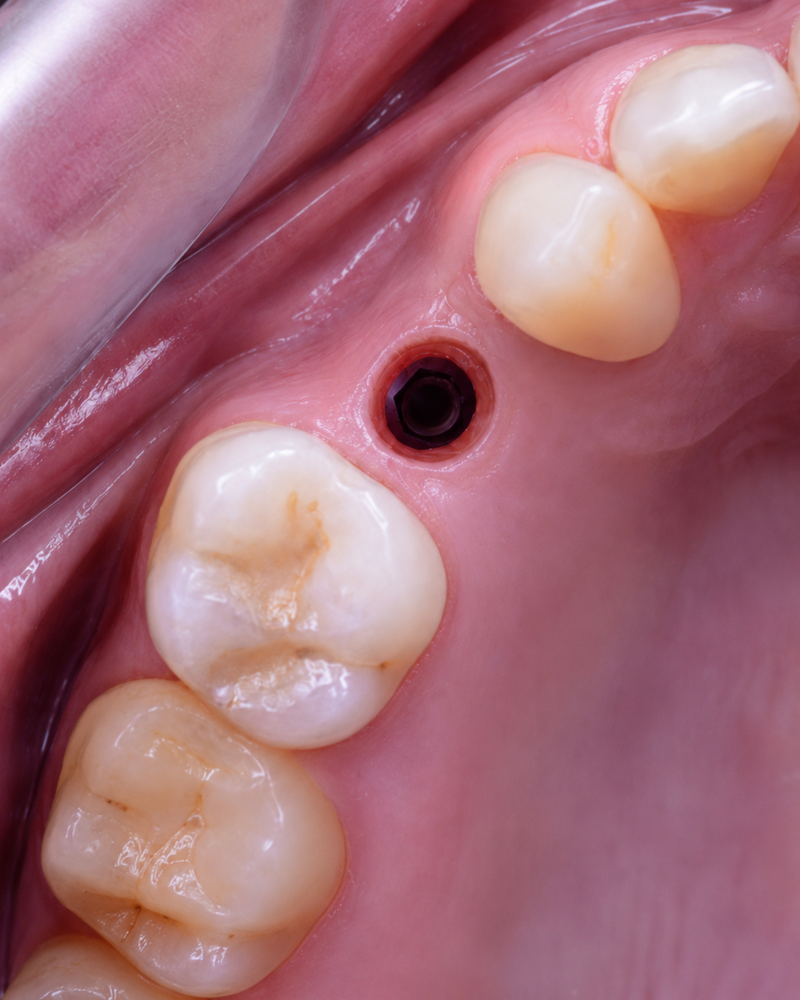
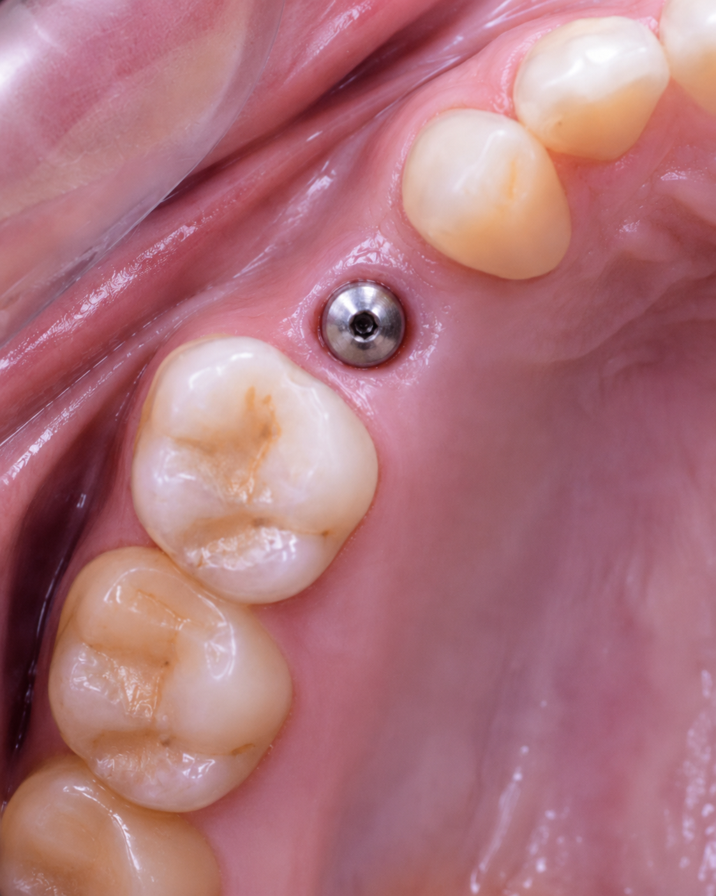
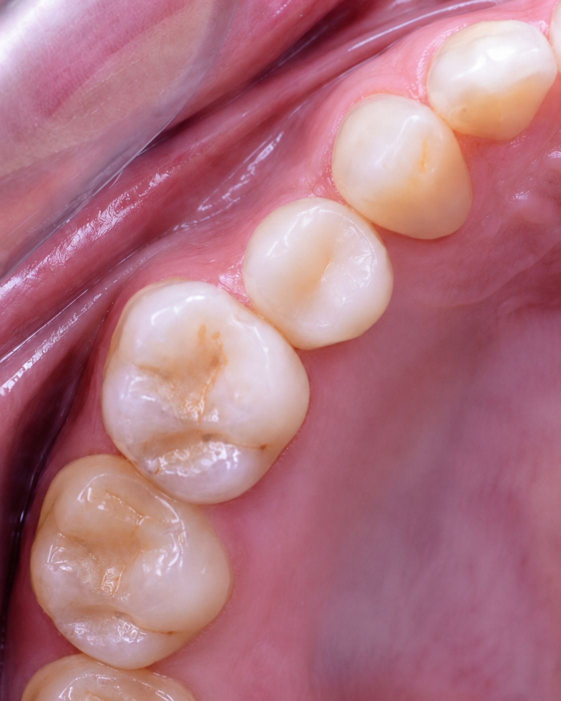

Un diente menos. Una vida diferente.
Todo empezó con una infección. En cuestión de días, Laura perdió un molar que la había acompañado toda su vida. El diente se fue — y con él, algo más difícil de nombrar.
Seis meses después, ese espacio vacío había cambiado la forma en que se relacionaba con el mundo. En clases, frente a sus alumnos, sentía que hablaba de otra manera. Con su pareja, se había vuelto más guardada. En reuniones con sus colegas, evitaba reírse fuerte.
«La autoestima la tenía por el piso», diría ella más tarde.
Nadie debería tener que ajustar su vida para esconder un problema que tiene solución. Pero así estaba Laura — hasta que decidió hacer algo al respecto.
Cómo San Martin Dent entró en su historia
Cuando llegó a nuestra clínica dental en Temuco, llegó en su momento más difícil. No buscaba solo un procedimiento — buscaba recuperar algo de sí misma.
En San Martin Dent nos especializamos en implantes dentales y rehabilitación oral. Hemos acompañado a cientos de pacientes desde el diagnóstico hasta la transformación. Pero antes de cualquier técnica, escuchamos. Porque detrás de cada espacio vacío hay una persona que lleva ese peso a su manera.
Con Laura, diseñamos un plan claro, sin sorpresas. Un paso a la vez.
¿Te identificas con lo que vivió Laura? Agenda tu evaluación hoy.
Consultar por WhatsAppEl proceso de Laura, paso a paso
Los implantes dentales son hoy el estándar de oro para reemplazar piezas perdidas. El proceso es claro y predecible. En tres etapas, Laura pasó de tener un espacio vacío a tener un diente que no se distingue del resto.

Colocación del implante
Instalamos una raíz de titanio en el hueso bajo anestesia local. El procedimiento dura aproximadamente una hora y es completamente indoloro. Laura volvió al trabajo al día siguiente.

Oseointegración y cicatrización
Durante 2 a 4 meses el implante se fusiona con el hueso — un proceso llamado oseointegración. Luego se conecta el pilar de cicatrización para preparar la encía. En todo ese tiempo, vida completamente normal.

Corona definitiva
Una vez cicatrizada la encía, instalamos la corona — el diente visible. El resultado es funcional, estético y permanente. Desde ese momento, Laura dejó de pensar en ese espacio.
El momento en que todo cambió
Hay un punto en el proceso en que los pacientes dejan de pensar en su boca. Cuando el diente nuevo empieza a sentirse propio. Cuando vuelven a reírse fuerte en una reunión sin pensarlo dos veces.
Para Laura, ese momento llegó frente a su sala de clases.
Laura hoy: frente a su sala, sonriendo sin pensarlo.
«Llegué en mi momento más bajo, la autoestima la tenía por el piso. Gracias al equipo de San Martín Dent, ahora estoy en mi mejor momento.»— Laura, 46 años · Profesora, Padre las Casas
¿Llevas tiempo postergando esto? El momento de actuar es hoy.
Agendar evaluaciónLo que pasa si sigues esperando
Cada mes que pasa sin atender un espacio dental, el hueso que lo rodea se reduce. Lo que hoy es un procedimiento directo puede convertirse, con el tiempo, en un caso más complejo — con más pasos y más tiempo de tratamiento.
Pero más que el hueso, lo que se pierde es tiempo de vida. Tiempo de sonreír sin pensarlo. De hablar sin cubrirte la boca. De ser tú misma en tu trabajo, con tu pareja, con las personas que quieres.
Laura esperó seis meses. No tiene que ser tu historia.
Preguntas frecuentes sobre implantes dentales en Temuco
¿Duele la cirugía del implante?
No. Se realiza bajo anestesia local y es completamente indolora durante la intervención. Los primeros días puede haber molestias leves que se controlan fácilmente con analgésicos comunes.
¿Cuánto tiempo tarda todo el proceso?
Entre 3 y 6 meses según el caso. Incluye la colocación del implante, la oseointegración (2–4 meses) y la instalación de la corona definitiva. En todo ese tiempo llevas una vida completamente normal.
¿Soy candidato para implantes dentales?
La gran mayoría de los adultos con buena salud general pueden recibir implantes. En San Martin Dent evaluamos cada caso de forma personalizada para definir el tratamiento adecuado.
¿Cuánto duran los implantes dentales?
Con cuidado adecuado, pueden durar toda la vida. Son la solución más duradera para la pérdida dental, superando con creces a las prótesis removibles y los puentes fijos.